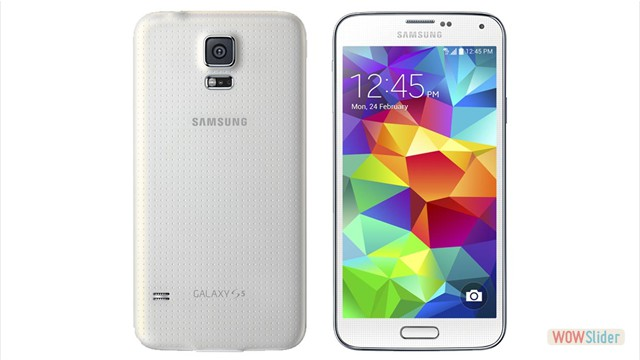
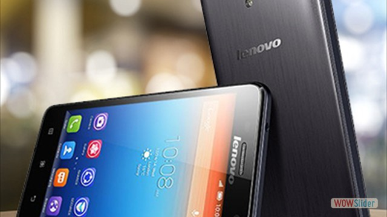
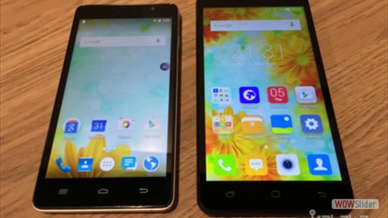
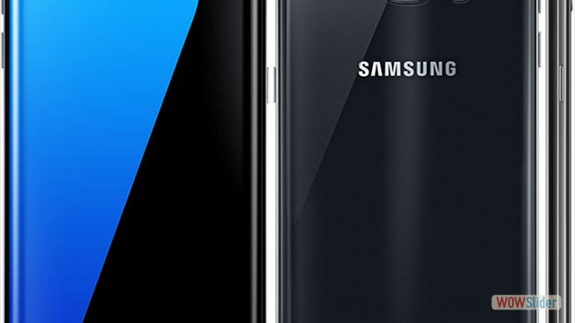
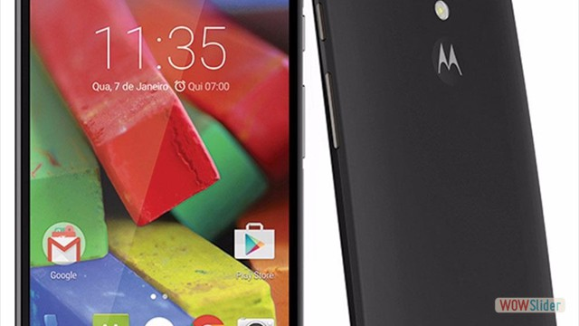
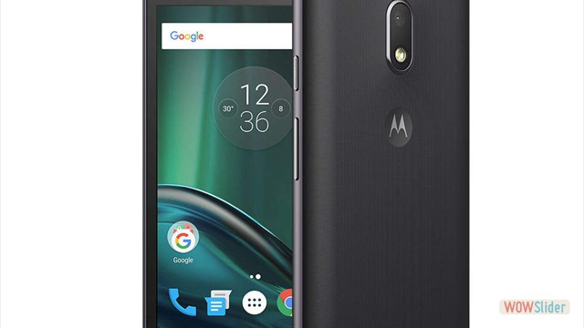
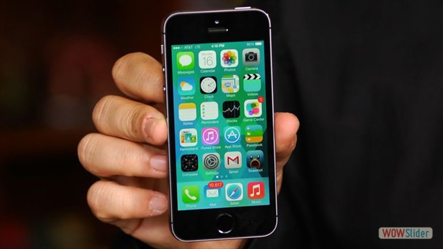
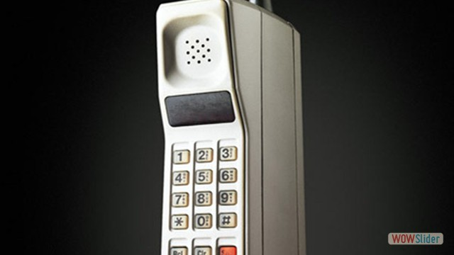
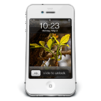

Telefonia Celular En Mexico
- 
- 
- 
- 
- 
- 
- 
- 
 10
10http://wowslider.net/ by WOWSlider.com v8.7
Telefono Celular
Telefono Celular:


Telefono Celular:

El teléfono móvil o teléfono celular es un aparato indispensable en la actualidad; sin embargo su popularización ha sido un fenómeno muy reciente. En un principio el teléfono móvil solo podía ser usado en vehículos por su tamaño, reduciéndose posteriormente a una unidad portátil, y finalmente al tamaño de bolsillo que utilizamos hoy. Pero el teléfono en sí es solo una pequeña parte de un sistema de telefonía mayor.


Motorola Moto G (2nd Gen) es la segunda versión del popular Moto G, esta vez con una pantalla ligeramente más grande y un diseño exterior renovado. Entre sus características cuenta con una pantalla 720p de 5 pulgadas, procesador Snapdragon 400 quad-core a 1.2GHz, 1GB de RAM, cámara de 8 megapixels trasera y 2 MP al frente, ranura microSD, 8GB o 16GB de almacenamiento, TV Digital (en ciertos mercados) y parlantes frontales.
El Motorola Moto G4 Play es una tercer variante del Moto G4, tal vez la que conserva más similitudes en cuanto a características con el Moto G de tercera generación, ya que cuenta con una pantalla 720p de 5 pulgadas, procesador quad-core Snapdragon 410, 2GB de RAM, 16GB de almacenamiento interno expandible, cámara principal de 8 megapixels, cámara frontal de 5 megapixels, batería de 2800 mAh y corre Android 6.0.1 Marshmallow.

El Samsung Galaxy S7 no modifica mucho el diseño del Galaxy S6, pero mejora varios aspectos en sus características. En Galaxy S7 cuenta con una pantalla QHD AMOLED de 5.1 pulgadas, procesador Snapdragon 820 o Exynos octa-core, 4GB de RAM, 32GB o 64GB de almacenamiento interno, cámara de 12 MP con estabilización óptica de imagen, batería de 3000 mAh, resistencia al agua IP68 y agrega ranura microSD.

Unefon es una compañía mexicana de telefonía móvil, la cual se dedica a ofrecer únicamente el esquema de cobro de prepago; la marca fue adquirida en conjunto con Iusacell en noviembre de 2014, tras el acuerdo alcanzado entre AT&T y Grupo Salinas. Actualmente Unefon utiliza la misma infraestructura móvil que AT&T, la cual incluye su más reciente despliegue de la red 4G LTE.
Pagina De Unefon
clickTelcel es una marca propiedad de la empresa mexicana Radiomóvil DIPSA, S.A. de C.V.. Tiene presencia en todo México y se dedica a ofrecer servicios de telefonía móvil, telefonía fija, servicios de banda ancha, entre otros servicios.
Movistar México (legalmente Pegaso PCS, S.A. de C.V.), es una empresa proveedora de servicios de telefonía móvil en México, subsidiaria del Grupo Telefónica y su División Telefónica Móviles.
Pagina De Movistar
clickAT&T México (de razón social: AT&T Comunicaciones Digitales, S. de R.L. de C.V.) es una empresa mexicana de telecomunicaciones, subsidiaria de la empresa estadounidense AT&T, cuya sede se encuentra en la Ciudad de México. Entre sus principales servicios está la telefonía móvil, el internet móvil, servicios de banda ancha móvil, entre otros.
Pagina De ATT
clickEl Nokia GEN no es otra cosa más que la excusa utilizada por los de Espoo en esta ocasión par celebrar el 25 aniversario del Nokia Research Center, el centro de investigación de la multinacional finesa, a la que la marca le debe gran parte de los éxitos obtenidos a lo largo de los últimos años.En su esencia, el Nokia GEM se trata de un dispositivo móvil cuya superficie es, en su totalidad, una pantalla táctil, la cual le permite cambiar su apariencia en virtud de la función escogida por el usuario.

El Nokia HumanForm elimina las líneas rectas de los celulares actuales, es flexible, cuenta con una pantalla transparente y muestra la forma en que la compañía considera que debe ser la manipulación de los teléfonos móviles en los próximos años. En el video puede observarse cómo la interacción gestual y el control flexible hacen que este dispositivo sea práctico y fácil de utilizar.

El Mozilla Seabird puede presumir de ideas interesantes como el picoproyector para tener un teclado físico virtual en cualquier superficie, o un ratón 3D que actúa también como un manos libres. Todo perfectamente integrado en un diseño curvado con un frontal todo pantalla de gran resolución y cámara de fotos de 8 megapíxeles.

El ZTE Eco-Mobius es un concepto de smartphone modular, diseñado para que los usuarios puedan elegir los componentes que les interesen y actualizarlos sin necesidad de adquirir nuevos smartphones completos de los que no aprovechen todas sus capacidades. Este dispositivo de ZTE estará preparado para que los usuarios puedan intercambiar fácilmente y mediante módulos magnéticos tanto la CPU como la memoria RAM o el almacenamiento interno, además de la cámara fotográfica y otros aspectos como la GPU y la batería.